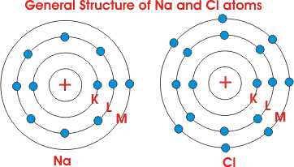
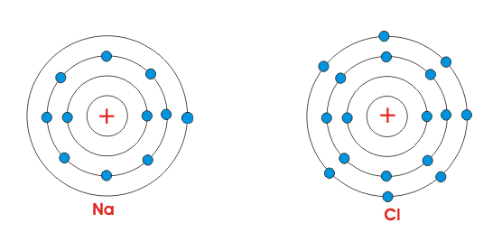

Ionization
It is found that some particular types of substances are added to water, they get dissolved and their molecules get split into negative and positive ions. This process of splitting up of molecules in positive and negative ions in solution is generally referred as ionization. So definition of ionization can be as follows,
What is Ionization?
Definition of Ionization
The process of splitting up molecules of a substance in positive and negative ions when the substance is dissolved is known as ionization.
Now we will discuss about ionization process in detail.
Ionization Process
To understand the process, we will consider the structure of sodium chloride. Sodium chloride is the common salt, we use in our day to day life. The atomic number of Na and Cl are 11 and 17 respectively. That means sodium atom has 11 numbers of electrons and chlorine atom has 17 numbers of electrons in their orbits. The atomic structure or arrangement of electrons in their orbits, in both the atoms are shown in the figure below.

It is clear from the figure beside, the Na atom has only one single electron in its outermost orbit. Whereas chlorine contains seven electrons in its outermost orbit. But we know that for stability, atoms generally require eight electrons in their outermost orbit. So, both of the shown atoms are chemically active. When these atoms are brought together, Na atom loses its outermost electrons, becomes positively charged and Cl atom gains one electron and becomes negatively charged. So both atoms acquire eight electrons in their outermost orbit by exchanging these electrons. As the Na atom is positively charged and Cl atom is negatively charged, electrostatic force acts between them, due to which they will together and make one NaCl molecule.
Now according to Coulomb's law, the electrostatic force acting between two opposite charges is expressed as,

Where, εr is the relative permittivity of the medium. So it is clear that electrostatic force between two charges is inversely proportional to the relative permittivity of the medium in which the charges are placed. The ionization process can easily be explained by relative permittivity of the medium. The relative permittivity of air is 1.00058986 ± 0.00000050 or 1 and the relative permittivity of water at 20°C is 80. So, in water the electrostatic force acting between Na and Cl is 80 times smaller than that in the air. The electrostatic force between Na and Cl becomes so small, that it becomes difficult to hold the Na and Cl together in water. That is why whenever NaCl i.e. Sodium Chloride is dissolved in water, its molecules split into positive Na ion and negative Cl ion even at room temperature and below. This is ionization of NaCl.
 by
by